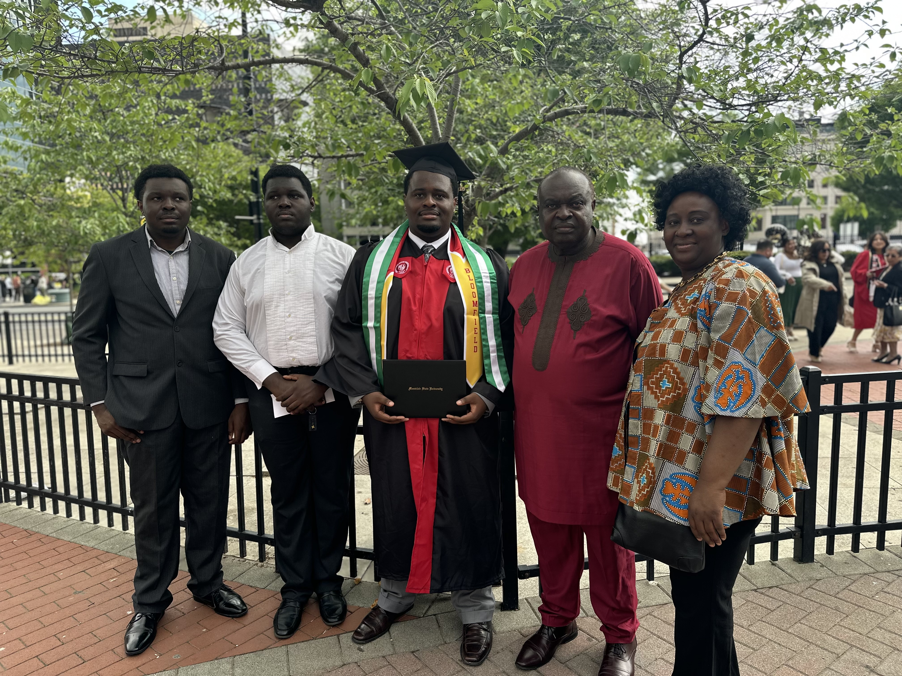

My name is Felix Kalu, and I graduated from Montclair State University with a degree in Computer Science. This website showcases my skills and current and upcoming projects. My goal is to create learn and grow as a developer, expanding and honing my abilities in the languages I am proficient in. I want to utilize my knowledege in python and sql to display my work on this site. I have hope that my projects and ideas are recognize by those who take a look at this portfolio.

Born on January 18, 2004, in Brooklyn, New York, I have moved to Newark, New Jersey, where I grew up and still reside with my brother and loving parents. I went through school years in Newark, attending Marion P. Thomas Charter School and later, North Star Academy. In 2022, I graduated from Bard High School Early College in Newark. Upon completion of my secondary education, I joined Montclair State University, enrolling for a Bachelor's Degree in Computer Science. I graduated in May 2025. Programming and code are exciting areas where you get to understand things in depth and solve different problems. I have enjoyed tinkering with items since early ages, fixing them, connecting things and solving problems in general. Additionally, basketball is among other hobbies that I enjoy. Competing with others, engaging with friends and learning new things are aspects of basketball game that I love most. Whether I am in the court or in my study area programming computers, I like to learn, improve and achieve my goal.
.png)
July 11 - August 21, 2023
Math Tutor
Assist incoming freshmen during the summer program to get a head start on their college journey. As well as assisting the professor in the classroom when her hands are full of other students.
November 2023 - May 2024
ESS Paraprofessional
● Assist teachers who are unavailable to attend their classes.
● Assist teachers who have a difficult time getting students to complete the
assignment in the classroom due to learning difficulties.
June 1, 2024 - July 1, 2025
Student Network Technician
● Installed, configured, and troubleshot routers, switches, network ports, and wireless devices
across multiple campus buildings.
● Utilized ServiceNow to manage and resolve support tickets for staff and students involving
network connectivity and desktop issues.
● Diagnosed hardware and software problems and provided timely solutions to maintain campus
technology services.
● Collaborated with IT team members to support network infrastructure and ensure efficient
technology operations.
2025 - Current
Computer Support Specialist
● Provide technical support for printers, fax machines, desktops, and laptops for church staff and
members.
● Troubleshoot hardware, software, and login issues to minimize downtime and improve user
productivity.
● Assist elderly users with computer access, password recovery, and secure management of
personal information.
● Deliver user-friendly technical guidance and maintain excellent customer service while resolving
technology-related concerns.
I trained an AI model to pull from an SQL query and display the results of a menu from a imaginary restaurant. The AI model was trained to understand the SQL query and provide the relevant information in a user-friendly format. This project demonstrates my ability to work with AI and SQL, showcasing my skills in data retrieval and presentation.